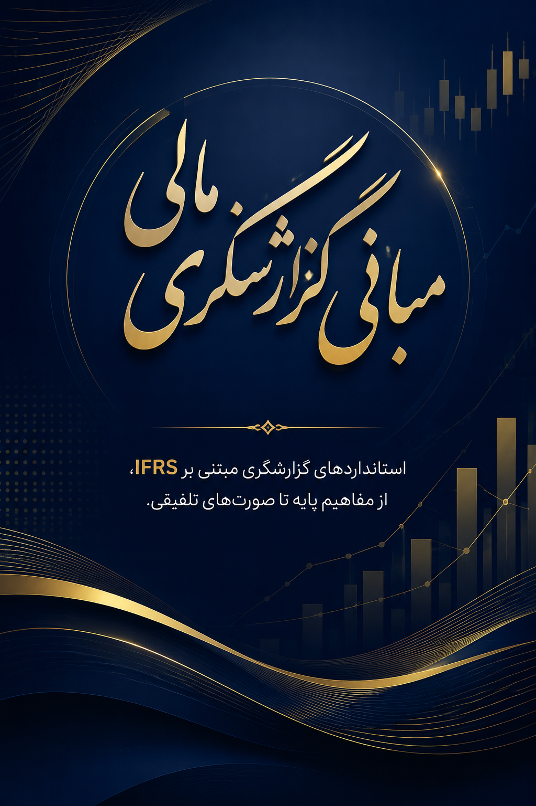

۰۱حساسیت بازدهی سهام
درباره من
دکتر میلاد اثنی عشری | مدرس و پژوهشگر ارشد حسابداری و مدیریت مالی
مدیر مالی و پژوهشگر ارشد حوزه حسابداری با بیش از یک دهه سابقه اجرایی در مدیریت مالی صنایع متنوع و نظام بانکی. دانشجوی دکتری حسابداری، متخصص در طراحی استراتژیهای مالی، مدیریت پرتفوی، ارزیابی ریسک و حسابرسی داخلی؛ با تمرکز بر پیوند دانش دانشگاهی، تجربه اجرایی و فناوریهای نوین مالی.
Every choice carries an unseen invoice
هر تصمیم مالی، اثری پنهان بر آینده سازمان و مسیر حرفهای شما دارد.
دورههای آکادمی

رویدادها
دوره جامع استانداردهای بینالمللی حسابداری
بررسی جامع و کاربردی جدیدترین استانداردهای حسابداری مالی و گزارشگری با رویکرد ورود به بازار کار حرفهای و ارتقای مهارتهای تحلیلگری سازمانی توسط آکادمی منتشر شد.